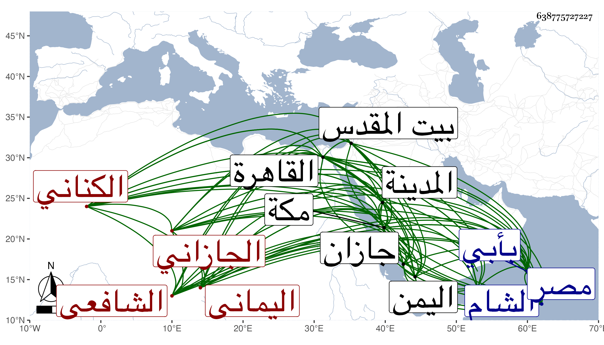

0902Sakhawi.DawLamic.ITO20230111-ara1.EIS1600.638775727227
Biography ID: 638775727227
أحمد بن حسن بن أحمد بن إبراهيم شهاب الدين الخريمي الكناني الجازاني اليماني الشافعي نزيل الحرمين ويعرف بالجازاني . ولد سنة أربع وستين وثمانمائة تقريبا بأبي عريش من أعمال جازان من اليمن ونشأ بها فقرأ القرآن وهاجر لمكة صحبة خاله فقطنها وحفظ الإرشاد وجمع الجوامع وألفية النحو واشتغل بها وبالمدينة على غير واحد من أهلها والقادمين عليها كإسماعيل بن أبي يزيد ومعمر والنور للطنتدائي وأبي الخير بن أبي السعود والسمهودي في الفقه والفرائض والعربية وغير ذلك ، ومن شيوخه في العربية البدر حسن المرجاني قرأ عليه الكافية والنصف الأول من المتوسط مع جميع شرحه لقواعد ابن هشام بل قرأ عليه مؤلفا له في الدماء وحضر دروس الجمال بل سمع على والده في الصحيحين والسيرة وعلى عمه الفخر أبي بكر قليلا في الفقه وفرائض الإرشاد وكذا قرأ على السيد الكمال بن حمزة في الإرشاد حين مجاورته بمكة وقبل ذلك فيه إنما على الشهاب الخولاني بل قرأ على النور بن عطيف الإيضاح في المناسك للنووي والفاعلية وعلى المحب بن أبي السعادات مفترقين ، ودخل الشام وبيت المقدس وأخذ عن الكمال بن أبي شريف والتقي بن قاضي عجلون وكذا أخذ بالقاهرة عن عبد الحق السنباطي والزين النشاوي وحضر عند زكريا حين دخوله مصر وكتب من تصانيفي ترجمة النووي والابتهاج وقرأهما ولازمني في مجاورتي بعد الثمانين في مجاورتي بعد التسعين فسمع الكثير ومن ذلك ألفية الحديث بكمالها بحثا وقرأ على جملة من أوائل الكتب وكتبت له إجازة في كراسة والآن في سنة تسع وتسعين مقيم بالقاهرة قضى الله مآربه وهو خير ساكن كان ربما يتكسب بالتأديب ثم أعرض عنه وله حرص على التحصيل .
